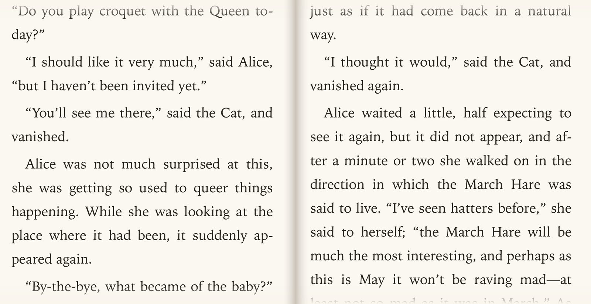
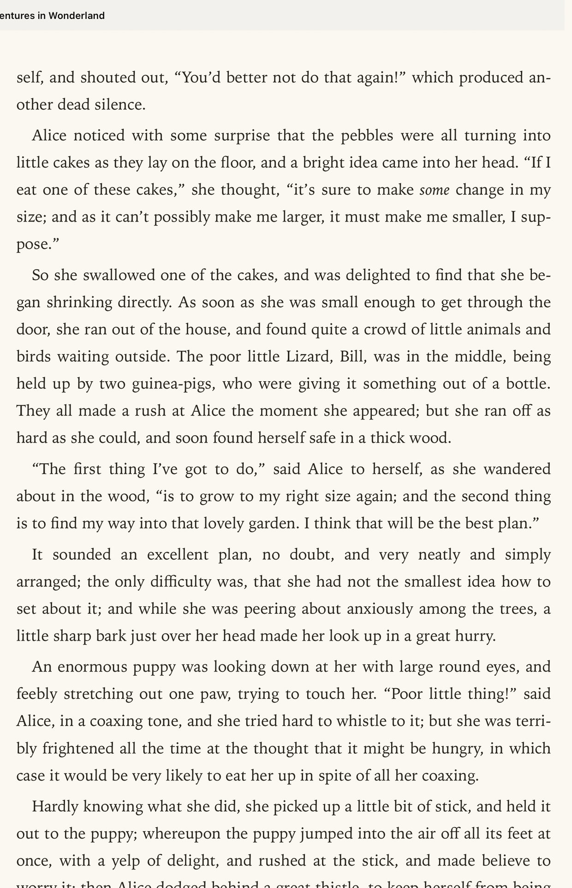

ひとりで作っています。問いはひとつだけ：本のように開く端末で、読書はどんな手触りであるべきか。
DuoFolio は折り目を中心に書かれていて、折り目の上で動くだけのアプリではありません。他の選択肢と比べているなら、次のページに正直な比較があります——無料のほうが良い場合も含めて。
本文は内側ディスプレイの左右にひと続きの見開きとして流れます。開けば本当の見開き、閉じればカバー画面がしおりになります。本棚は端末の外に出ません。
DuoFolio を入手Duo を開けば、本も開く。
偶数ページが左、奇数ページが右。折り目の側には柔らかな紙の溝が走ります。DuoFolio がめくるのは紙そのもの——1段の本文を広い画面に流し込んで「見開き」と呼ぶことはしません。

角をつまめば、紙が指についてくる。
スライドでもフェードでもありません。紙が実際に巻れます——角がめくれて起き上がり、紙の裏が光を受けて、影が溝の側に落ちる。次の紙はもう下で待っています。途中まで引けばそこで止まり、離せばどちらかに落ち着きます。
折りたたみにだけできること：紙が紙として振る舞う、本のように開く端末の上で。

Duo を閉じると、外側の画面が表紙カードになります。表紙、書名、どこまで読んだか——端末を開かずに一目で分かります。もう一度開けば、離れた桁からそのまま続きます。閉じていても、半開きでも、全開でも。

読み込んだ EPUB はアップロードされません。作るアカウントも、切るべき解析も、ネットワークへの依存もありません。読書位置、テーマ、文字サイズは端末の中だけにあります。
リーダーでこれが効く理由：読書アプリは、読んだものすべてを見られます。DuoFolio は「大事に扱います」と約束するのではなく、そもそも集めるものが無いように作っています。

セリフの本文、調整した行間、何分ではなく何時間のために作った紙の色調。画面が大きくなると本文欄は広がり、引き伸ばされはしません——iPad でも Duo でも同じ組版のルールです。

日本語、English、简体中文、繁體中文、한국어、Deutsch、Français、Español、Português (Brasil)——メニューだけでなく、画面もストアの掲載も。
ひとりで作っています。問いはひとつだけ：本のように開く端末で、読書はどんな手触りであるべきか。
DuoFolio は折り目を中心に書かれていて、折り目の上で動くだけのアプリではありません。他の選択肢と比べているなら、次のページに正直な比較があります——無料のほうが良い場合も含めて。